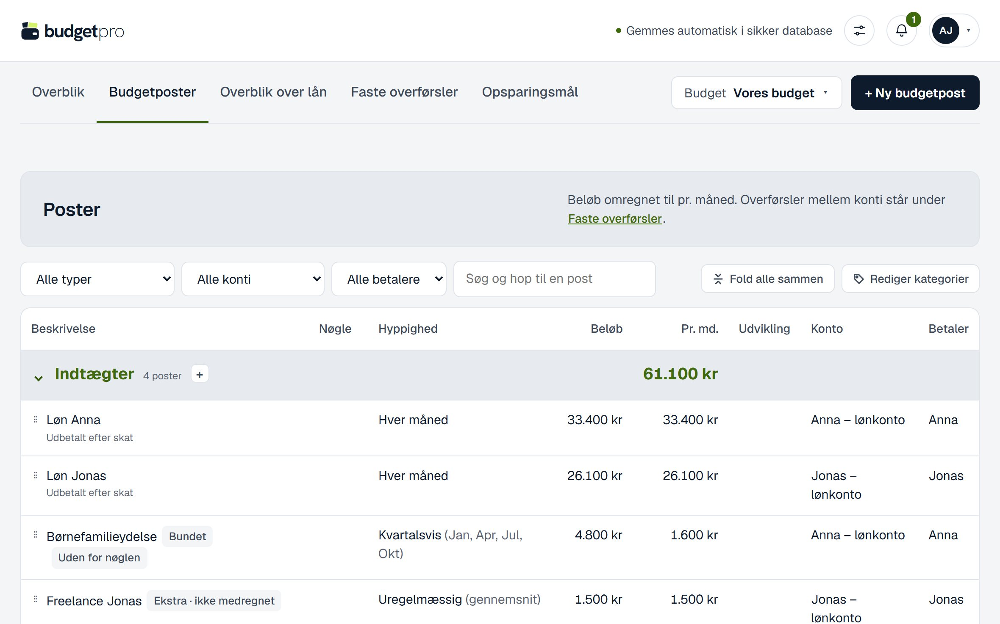

Dit første budget.To måder at starte.
Byg det fra bunden med guiden – eller læg dine kontoudtog og dit gamle budget ind.
Fra bunden, eller med dine tal
Guiden bygger budgettet trin for trin. Har du kontoudtog eller et budget i Excel, kan du lægge dem ind i en kladde.
Intet budget endnu
Guiden tager dig igennem personer, konti, faste udgifter, fordeling, opsparingsmål, bankens faste udgifter og påmindelser. Alt kan rettes bagefter.
Navn, personer og løn
Guiden spørger om det, budgettet bygger på. Lønnen er den, der udbetales efter skat – og kan også komme på senere.
Konti og faste udgifter
Skriv de udgifter, du kender – hver måned, kvartalsvis eller årligt. Tomme felter springes over.
Fordeling, mål og påmindelser
Vælg, hvordan I deler de fælles udgifter, og hvad I sparer op til. Trin, du ikke har brug for, kan du springe over.
Start nyt budget
Hvad skal budgettet hedde? Navnet står øverst på siden og i eksporten.
Hvem er med i budgettet? Skriv den løn, der udbetales efter skat hver måned. Beløbet kan springes over og tilføjes senere.
Hvilke konti bruger I? Navne og kontonumre kan rettes under "Konti og personer".
Skriv de faste udgifter, I kender. Tomme felter springes over. Udgifterne lægges som fælles på Budgetkonto og kan fordeles om senere.
Hvordan skal de fælles udgifter deles?
Har I noget, I sparer op til? Korte svar er nok. Alt kan rettes under Opsparingsmål.
Målene starter næste måned og betales fælles til Fælles opsparing.
Når banken regner rådighedsbeløbet ud, trækker den de faste udgifter fra indtægterne. Sæt flueben ved de udgifter, din bank tager med. Du kan springe trinnet over og rette det senere.
Vil du have besked, når det er tid til at se budgettet igennem? Påmindelsen kommer, når budgettet ikke er rettet i den valgte periode.
Det bliver oprettet:
- Vores budget
- 2 personer: Anna, Jonas · løn for Anna, Jonas
- Konti: Budgetkonto, 2 lønkonti, Fælles opsparing
- 6 faste udgifter, i alt 18.411 kr pr. md.
- Fordeling: efter indkomst · automatiske overførsler
- 1 opsparingsmål: Sommerferie i Italien
- Bankens faste udgifter: 5 af 6 udgifter, 12.411 kr pr. md. · standardkrav
- Påmindelse hver 3. måned · besked ved milepæle
Opret – og ret bagefter
Du ser det hele samlet, før budgettet bliver oprettet. Bagefter kan alt rettes under Budgetposter og Indstillinger.

Har du tal? Start en kladde
Vælg Ny kladde i budgetmenuen. En kladde er et budget ved siden af det, du har – fra bunden eller som en kopi.
Ny kladde
En kladde er et budget ved siden af det, du bruger i dag. Læg kontoudskrifter fra alle konti eller et budget fra Excel ind i den, ret til, og sæt den som primært budget, når den er færdig.
Læg alle filerne ind på én gang
Kontoudtog som CSV, Excel eller PDF fra netbanken – og dit gamle budget fra Excel. Selve filerne bliver ikke gemt.
Filer til kladden
Hent posteringer fra netbanken for hver konto, fx de seneste 3–12 måneder. Læg gerne alle filer ind på én gang, så overførsler mellem egne konti kan findes.
Dit gamle regneark kan komme med
Måneder eller kvartaler som kolonner, beløb og hyppighed, eller en kolonne pr. person. Alle ark læses, og totaler springes over.
Udgifter fra budgettetSom de står i budgettet
Du vælger, hvad der kommer med
budgetpro finder de faste poster og holder overførsler mellem dine egne konti ude. Det, du ikke vælger, bliver ikke gemt.
Filer til kladden
600 posteringer fra 2 filer. 4 poster fra budgettet. 12 overførsler mellem egne konti er holdt ude af udgifter og indtægter. Vælg de poster, der skal med i kladden.
Gør kladden til dit budget
Ret til i ro, og vælg Sæt som primært budget. Indtil da er dit nuværende budget uændret, og bagefter gemmes det som en kladde.

Fra bunden eller med dine egne tal.
Prøv det gratis i 30 dage. Derefter 29 kr om måneden.
budgetpro.dk